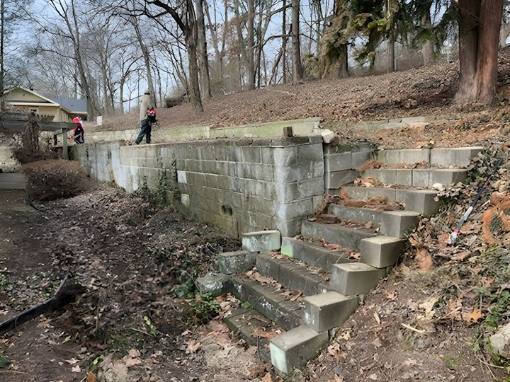
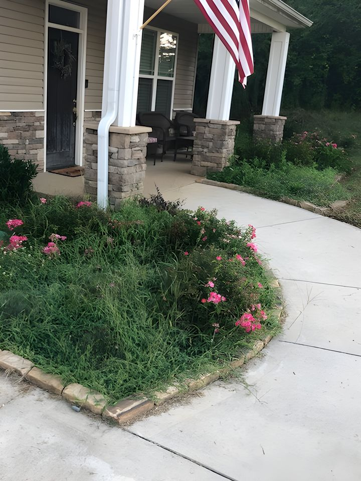
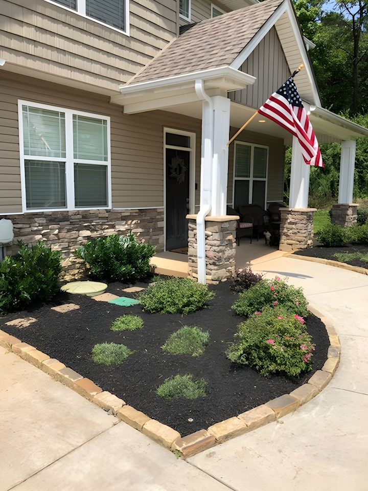
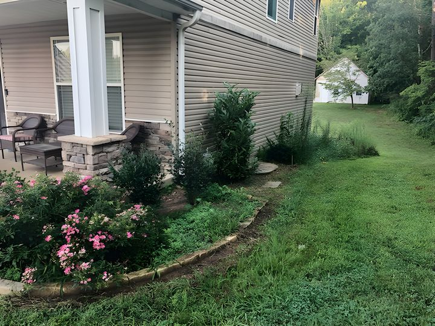
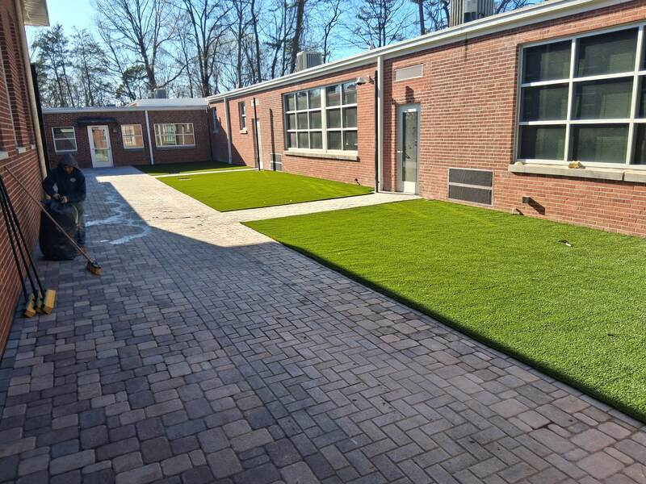
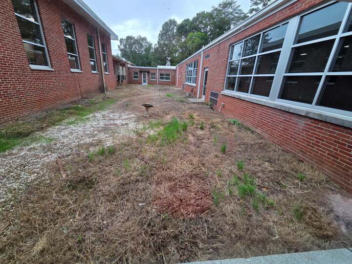
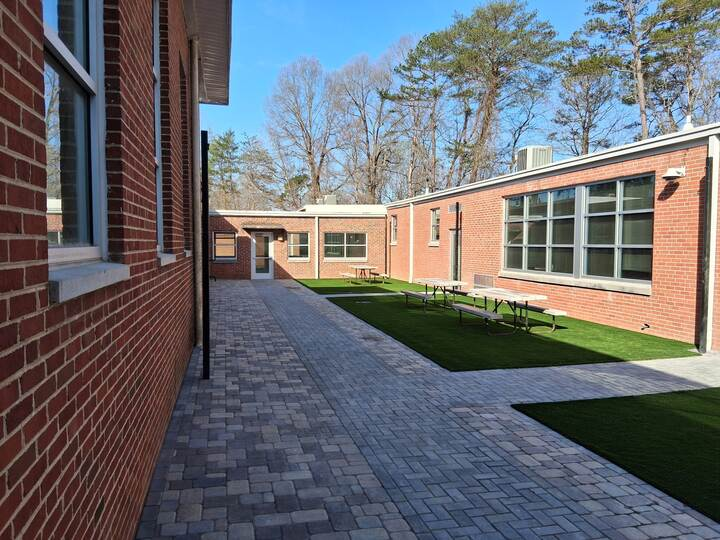
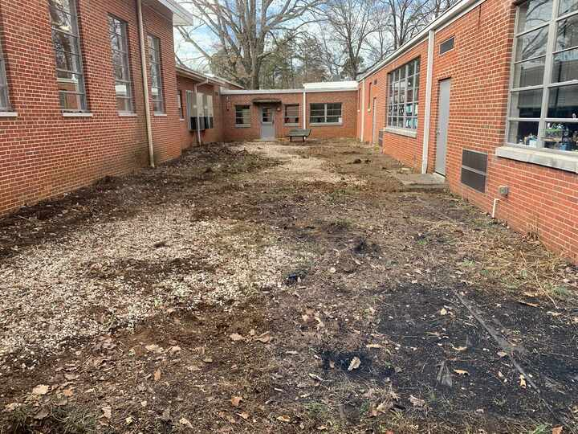
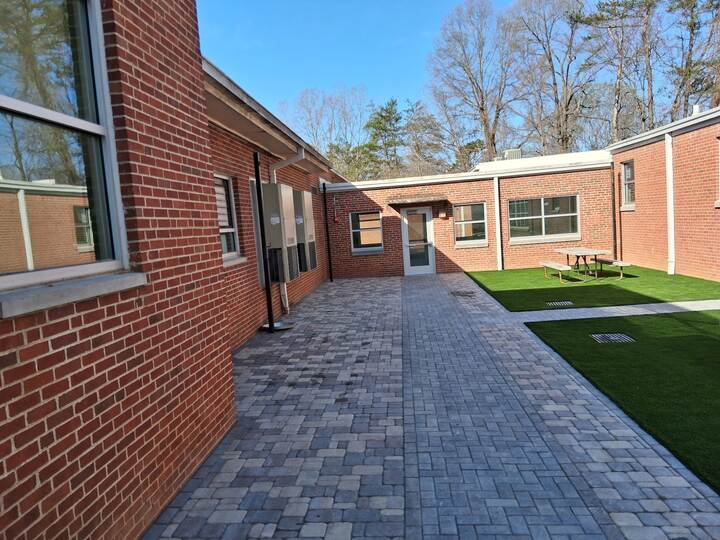

Backyard Blessings
We see yards in need of a fix up, but for various reasons the homeowners don't have the means or ability to do it. We come in and transform the space and make it look amazing! This service becomes a blessing for everyone involved.
Do you know someone in need of a Backyard Blessing? Use the form below to nominate someone today.

An Extreme Transformation in Oak Ridge
At a historic home in Oak Ridge, crumbling block walls and broken steps had disappeared under years of leaves and overgrowth. Our crews cleared the hillside and rebuilt it with new retaining walls, wide steps, fresh mulch beds and new sod.

BeforeAfter
 BeforeAfter
BeforeAfterA Quick Cleanup, a Big Difference
A quick cleanup for a local family going through a hard season: weeds pulled, beds edged and trimmed, and fresh mulch laid, all at no cost to them.


BeforeAfter
 BeforeAfter
BeforeAfterFeatured on Local News
Two of the biggest projects we've done to help our community in the last two years.

▶Mount Olive Elementary courtyard transformation
We turned an unused courtyard at Mount Olive Elementary into an outdoor classroom. The project sparked broad community support and a $25,000 grant for future development. WBIR covered the story.

Rollins community — Hurricane Helene relief
After Hurricane Helene, our crews spent four days on the ground in Western North Carolina, and nearly 20 days in total, helping families clear debris and recover.
Mount Olive Elementary: Before & After


BeforeAfter

BeforeAfterSupporting Our Community
At The Yard Force, we believe in giving back to the communities we serve. We are proud to support local schools, PTOs, school athletic teams, and charitable organizations through product and service donations, discounted projects, and silent auction contributions.
Have an upcoming fundraiser or community event? We'd love to hear how we can help!
Proud to support our community:
- Blue Grass Elementary PTO
- Northshore Elementary PTO
- Rocky Hill Elementary Foundation
- Sequoyah Elementary Foundation
- Lotts Elementary PTO
- West Valley Middle School Foundation
- West Valley Middle School Cheer
- West Valley Middle School Basketball
- Bearden High School Girls and Boys Basketball
- Bearden High School Dance
- Bearden High School Lacrosse
- Bearden High School Baseball
- Bearden High School Girls and Boys Soccer
- Hardin Valley Academy PTO
- West High School Baseball
- West View Elementary
- Mount Olive Elementary
- Dolly Parton Children’s Hospital
- American Heart Association
- American Cancer Society
- Boys and Girls Clubs of the Tennessee Valley
Contact us to learn more about community sponsorship opportunities.
Request Event Support
Thank you!
We review every request and will reply by email.
Know Someone Who Deserves This?
Tell us about them. We're not able to fulfill every request, but we'll get back with you. This form goes to our community team — it's separate from quote requests.
Thanks for submitting this!
We're really excited to help our community. We're not able to fulfill every request, but we'll get back with you.